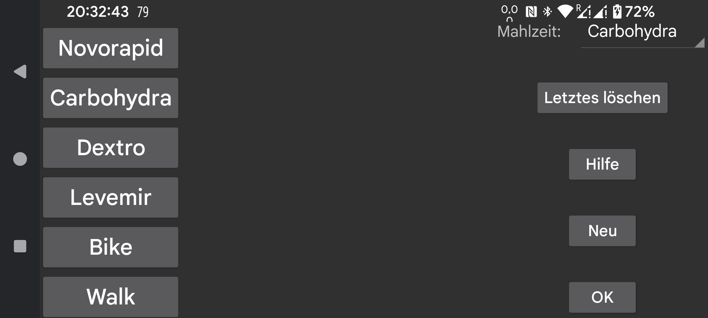

be de fr it nl pl pt ru tr uk zh en
Hier können Sie Beschriftungen für Mengen erstellen, löschen und ändern, die dem Diagramm hinzugefügt wurden, um Insulin, Kohlenhydrate oder körperliche Aktivität anzugeben. Wenn Sie bereits Mengen gespeichert haben, erhalten diese das ihrer Position entsprechende Label. Wenn Sie also der zweiten Position einen anderen Namen geben, erhalten bereits gespeicherte Mengen, die mit einem früheren Namen an der zweiten Position angegeben wurden, diesen Namen.
Um ein Etikett zu ändern, berühren Sie es.
Nach Mahlzeit können Sie auswählen, welches Etikett für den Kohlenhydratgehalt von Mahlzeiten steht. Für dieses Etikett wird bei „ Neue Menge “ im linken mittleren Menü ein Mahlzeit - Button hinzugefügt, mit dem Sie eine Mahlzeit aus ihren Zutaten festlegen können. Die Kohlenhydratsumme wird dann unter diesem Label gespeichert und Sie können sich diese Mahlzeit später ansehen, indem Sie die Mahlzeit mit gespeichertem Wert auswählen.